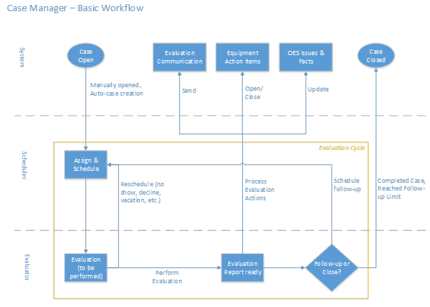

Case Manager is configurable to enforce business rules and provide permissions to users based on your evaluation process. There are two basic types of activities/roles that Case Manager was designed around: Scheduling and Evaluations.
Case Manager supports the concept of schedulers who just schedule ergonomic evaluations and evaluators that perform the evaluations. Of course, Case Manager also supports evaluators who can schedule. An Administrator has all privileges and rights to perform any action and see all information in the system.

Case Manager is state-driven, using 4 sub-status markers to indicate the current status of each case. Those sub-statuses are:
Taken together, these 4 sub-statuses define the current state of a case and the software shows the appropriate action to the user for each case. For example, when a case is: Open-Unassigned-Unscheduled-Initial, this indicates that the case has been newly opened, has not been assigned or scheduled and is ready for the Initial evaluation cycle. The sub-status changes with updates to information on the case and defines the set of activities that can be performed based on business rules.
The assign/schedule and evaluation processes can be repeated as many times as your business process allows. This cycle forms the evaluation cycle. The evaluation worksheet and report are captured for each cycle allowing you to review the changes and progression through a case.